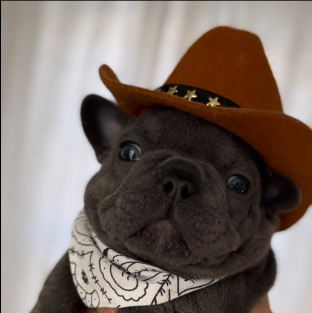

Mural - Encontre aqui cães desaparecidos
PIBBLE, desapareceu de casa a 4 dias, após seu passeio matinal a cavalo
até o centro de Curitiba, próximo a praça Osório. Ele possui vicio em apostas
e cigarros, ele tambem gosta muito da música "Runaway" do cantor kanye west. Atende
pelo nome Gmail ou Joseph.... Entrar em contato com o número (41) 99678-11456 - Matios Soprano

CÃO, fugiu de casa após descobrir que a parte 7 de Jojo não terá continuação, disse que não faria sentido viver mais em sociedade, vive em Curitiba na região do Ganchinho, atende o nome de Cleber. Contato 3459-9823 - Lucas Oliveira
SALSICHA - Cachorro encontrado em resenha no bairro do CIC em Curitiba, com ele estava algumas latas de skol, cachorro muito dócil. Contato com Kaliu - 3738-9543
Atendimeto: atendimentomeucao@desaparecidos.com - (41) 39742-8439